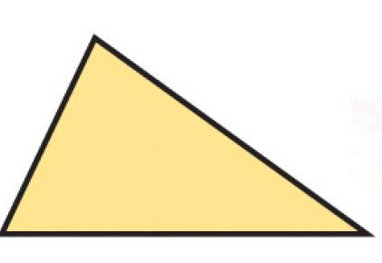
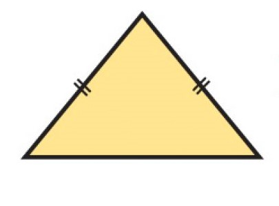

Definición de triángulo: Un triángulo es el polígono que resulta de unir 3 puntos con líneas rectas. Todo triángulo tiene 3 lados (a, b y c), 3 vértices (A, B y C) y 3 ángulos interiores (A, B y C).
-Posee tres lados iguales.
-Posee tres ángulos iguales.
 Triángulo Escaleno:
Triángulo Escaleno:
-Posee los 3 lados distintos.
-Posee los 3 ángulos distintos.
 Triángulo Isósceles:- Posee dos lados iguales y uno desigual.
-Posee dos ángulos iguales y uno desigual.
